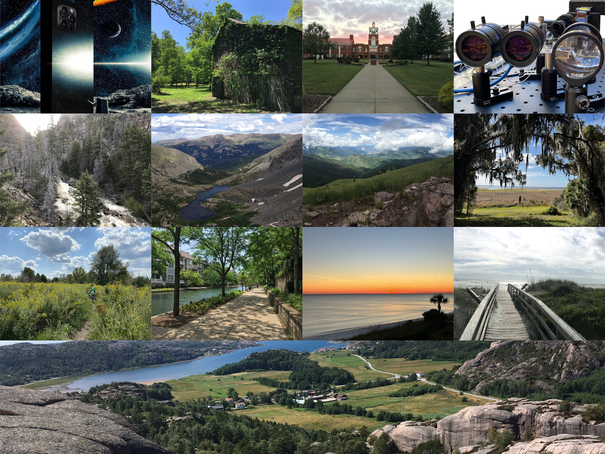

About Me
My name is Brevin Tilmon and I am based in Indianapolis, Indiana working as a Staff Scientist, Light Transport & Reconstruction at Quidient. Lately I have been focusing on metrology-grade 3D reconstruction and inverse rendering, imaging system design, and embedded software/hardware. I try to make detailed blogs for projects from my free time here and post links to work projects I am involved in.
CV · Email · GitHub · Google Scholar
